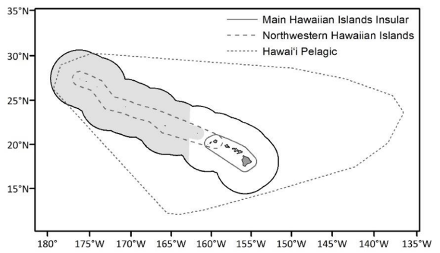
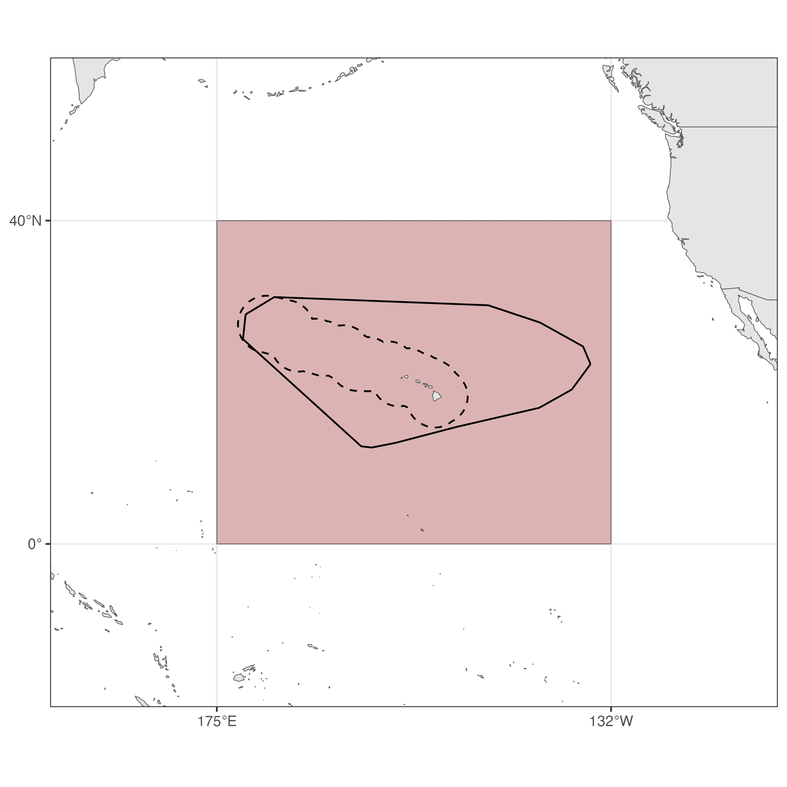

Introduction
Density Surface Modeling
Density Surface Modeling (DSM) is a powerful and increasingly common method used to estimate the abundance of cetaceans and other mobile marine species from distance sampling survey data. It provides a spatially-explicit approach to modeling animal density, addressing limitations of traditional methods that assume uniform density across the study area.
Conceptual Framework
DSM combines two primary components:
- Detection Function: Modeling the probability of detecting an animal, which typically decreases with distance from the transect line. This accounts for animals missed during the survey.
- Spatial Density Model: Modeling the expected density of animals across the study area as a function of environmental and/or spatial covariates (e.g., bathymetry, sea surface temperature, chlorophyll-a).
The final abundance estimate is derived by integrating the predicted density surface over the entire area.
DSM Outline
The core of DSM relies on the framework of Generalized Additive Models (GAMs) or related regression techniques to link the estimated number of detected animals in a given sampling unit to the effort expended and the predicted detection probability.
1. Estimated Effective Strip Width (\(ESW\))
For a standard line-transect survey, the effective strip width (\(ESW\) or \(\mu\)) is estimated from the fitted detection function, \(\hat{g}(x)\), where \(x\) is the perpendicular distance from the transect: \[ ESW = \int_{0}^{w} \hat{g}(x) dx \] where \(w\) is the truncation distance, and \(\hat{g}(x)\) is the estimated probability of detection at distance \(x\). The function \(g(x)\) is often modeled using a key function (e.g., half-normal or hazard-rate) with series expansion adjustments. Standard distance sampling methods assume that \(g(0) = 1\) because there is no information in detection distances to estimate this value. Other data must be used to estimate \(\hat{g}(0)\). So, we treat this quantity as separate from \(ESW\).
2. Spatially-Explicit Model for Encounter Rate of Groups
DSM typically employs a two-stage approach. The first stage estimates the detection probability. The second stage uses a regression model to predict the expected number of detected animals in each sampling unit (survey segment).
The model uses the estimated animal density, \(\hat{D}\), the effective strip width, \(ESW\), the trackline detection probability, \(\hat{g}(0)\), and the length of the segment, \(L\), to predict the expected number of detected groups (\(E[n]\)) in a segment: \[ E[n] = 2 \cdot \hat{g}(0) \times ESW \times L \times \hat{D} \] Taking the logarithm (commonly used for count data) yields the linear predictor for the spatial model, \[ \log(E[n_i]) = \log (\hat{g}(0)_i \cdot ESW_i \cdot L_i) + log(\hat{D}_i) \] where \(i\) indexed the sample unit (survey segment). This is rearranged for the actual GAM structure. The term \(\log (\hat{g}(0)_i \cdot ESW_i \cdot L_i) = \log E_i\) is treated as an offset in the model to account for detection related effort. This yields the spatially-explicit model, \[ \log(E[n_i]) = \log E_i + \beta_0 + \sum_{j} f_j(\text{covariates}_{i,j}) \] where \(\beta_0\) is the intercept, and \(f_j(\text{covariates}_{i,j})\) are smooth functions of the spatial and environmental covariates (e.g., longitude, latitude, depth, SST) that together model \(\log(D)\).
3. Spatially-Explicit Model for Group Size
In addition to encounter rate of groups, abundance also depends on the expected size of detected groups. Often this is modeled as a spatial mean, \(S\). However, environmental conditions might affect group size as well. For example, beneficial conditions might lead to large aggregations of individuals increasing the groups size. So, we generalize the group size to also be a function of environmental conditions through the GAM model, \[ \log(S_k) = \beta_0 + \sum_{j} f_j(\text{covariates}_{k,j}) \] where \(S_k\) is the observed group size for the \(k\)th detected group.
4. Abundance Estimation
The final estimated total abundance (\(\hat{N}\)) for a region, \(\mathcal{R}\), is obtained by integrating the predicted density surface of groups, \(\hat{D}(z)\) times the predicted surface of group size over the entire study area, \[ \hat{N} = A\int_{\mathcal{R}} \hat{D}(z) \hat{S}(z) dz \] where \(\hat{D}(z)\) is the predicted density at a location \(z\) (a function of the environmental and spatial covariates), \(\hat{S}(z)\) is the predicted group size at location \(z\), \(A\) is the total area of \(\mathcal{R}\). Typically, this is executed by calculating abundance over a fixed set of \(M\) grid cells, \[ \hat{N} = \sum_{j=1}^M \hat{D}(z_j) \hat{S}(z_j) A_j \] where \(z_j\) is a grid location within \(\mathcal{R}\) and \(A_j\) is the subarea of the region surrounding \(z_j\).
5. Uncertainty Assessment
There are several aspects contributing to uncertainty in the point estimate of abundance, \(\hat{N}\): uncertainty in GAM parameters and uncertainty in \(ESW\) and \(g(0)\) values. These are treated as constants in the encounter rate model. However, they are estimated from data. Dynamic covariates may also be considered, so there is variation in covariate values through time. To assess the coefficient of variation (CV) for \(\hat{N}\), we use the variance propagation procedure of Bravington et al. (2021)1 which proceeds as:
Fit the extended GAM model: \[ \log(E[n_i]) = \frac{\partial\log E_i(\theta)}{\partial \theta}\delta + \beta_0 + \sum_{j} f_j(\text{covariates}_{i,j}) \] where \(\theta\) are the parameters in the distance sampling and \(g(0)\) analysis, and \(\delta\) is a multivariate normal random effect with fixed variance \(V = \text{Var}(\theta)\). This inflates the other GAM coefficients to account for \(\theta\) (hence \(ESW\) and \(g(0)\)) uncertainty.
Draw \(r\) values of the GAM coefficients from the posterior distribution using importance sampling. Use the extended model for encounter rate and the initial group size model. This accounts for GAM parameter uncertainty.
For \(d\) different days of interest, predict abundance within the study area using all \(r\) parameter values. Then
\[ \widehat{CV}(\hat{N}) = \frac{\sqrt{Var(\hat{N}_l)}}{Mean(\hat{N}_l)} \] over all \(r\times d\) estimates.
False Killer Whales
False killer whales (Pseudorca crassidens) are large toothed whales that inhabit sub-tropical and tropical oceanic domains worldwide and are considered rare throughout their range. Three distinct populations of false killer whales are found within the waters of the U.S. Exclusive Economic Zone (EEZ) around the Hawaiian Islands: two insular populations, one around the main Hawaiian Islands and the other around the Northwestern Hawaiian Islands, and the wide-ranging Hawaiʻi pelagic population.

The Hawaiʻi pelagic false killer whale population experiences a greater degree of overlap with commercial longline fisheries and has a history of depredating bait and catch. Bycatch of Hawaiʻi pelagic false killer whales has long exceeded allowable levels, leading to the formation of a Take Reduction Team and Take Reduction Plan to reduce serious injury and mortality from fishing operations, in accordance with the Marine Mammal Protection Act. Prior to 2023, the Hawaiʻi pelagic false killer whale population was assessed and managed within the EEZ. However, following updated NOAA Fisheries guidance for assessing marine mammal stocks, an assessment area beyond the EEZ was developed in an effort to better represent the geographic range of the population. The Hawaiʻi pelagic false killer whale assessment area is defined as a minimum convex polygon of a 35-km buffer around all genetic, telemetry, sighting, and bycatch location data known or assumed to be of Hawaiʻi pelagic false killer whales. Assessing the distribution and abundance of Hawaiʻi pelagic false killer whales in this area is necessary for ongoing efforts to measure and mitigate impacts from fisheries interactions.
Here, we use DSM to obtain abundance estimates for pelagic false killer whales in three regions: the broader central Pacific, the Hawaiʻi pelagic false killer whale assessment area, and the Hawaiian EEZ.

Footnotes
Bravington, M.V., Miller, D.L., and Hedley, S.L., (2021) Variance propagation for density surface models. J. Agri, Bio, and Env. Stat. 26:306-323.↩︎